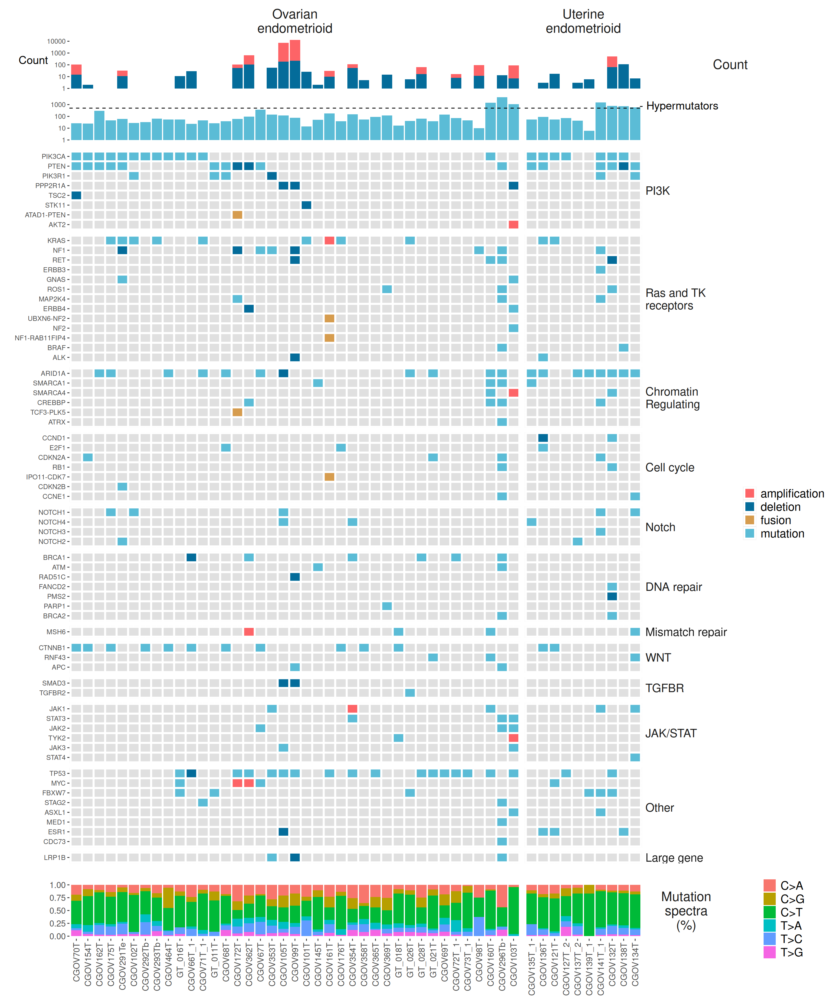

Last updated: 2026-08-31
Checks: 7 0
Knit directory: repo/analysis/
This reproducible R Markdown analysis was created with workflowr (version 1.7.2). The Checks tab describes the reproducibility checks that were applied when the results were created. The Past versions tab lists the development history.
Great! Since the R Markdown file has been committed to the Git repository, you know the exact version of the code that produced these results.
Great job! The global environment was empty. Objects defined in the global environment can affect the analysis in your R Markdown file in unknown ways. For reproduciblity it’s best to always run the code in an empty environment.
The command set.seed(12345) was run prior to running the
code in the R Markdown file. Setting a seed ensures that any results
that rely on randomness, e.g. subsampling or permutations, are
reproducible.
Great job! Recording the operating system, R version, and package versions is critical for reproducibility.
Nice! There were no cached chunks for this analysis, so you can be confident that you successfully produced the results during this run.
Great job! Using relative paths to the files within your workflowr project makes it easier to run your code on other machines.
Great! You are using Git for version control. Tracking code development and connecting the code version to the results is critical for reproducibility.
The results in this page were generated with repository version 9e09a1a. See the Past versions tab to see a history of the changes made to the R Markdown and HTML files.
Note that you need to be careful to ensure that all relevant files for
the analysis have been committed to Git prior to generating the results
(you can use wflow_publish or
wflow_git_commit). workflowr only checks the R Markdown
file, but you know if there are other scripts or data files that it
depends on. Below is the status of the Git repository when the results
were generated:
Ignored files:
Ignored: .Rhistory
Ignored: .claude/
Ignored: .uvr/
Ignored: .vscode/
Ignored: REPRODUCIBILITY_PLAN.html
Ignored: Rplots.pdf
Ignored: _targets/
Ignored: bam_clean/
Ignored: baseline_review/
Ignored: cards/dashboard.html
Ignored: code/archive/
Ignored: data/crosswalk_private.csv
Ignored: data/ega_file_listing.csv
Ignored: extdata/bVals.rds
Ignored: extdata/bVals081820.rds
Ignored: extdata/mutation_reports/
Ignored: hallberg2025.base/
Ignored: hallberg2025.meth.data/data-raw/.Rhistory
Ignored: hallberg2025.meth.data/data-raw/_targets/
Ignored: hallberg2025.meth.data/data-raw/_targets_change002_delta/
Ignored: hallberg2025.meth.data/data-raw/beta_concordance_batch1.png
Ignored: hallberg2025.meth.data/data-raw/logs/
Ignored: hallberg2025.meth.data/data-raw/slurm-34256940.out
Ignored: hallberg2025.meth.data/data-raw/slurm-34683691.out
Ignored: hallberg2025.seq.data/data-raw/.Renviron
Ignored: hallberg2025.seq.data/data-raw/Rplots.pdf
Ignored: hallberg2025.seq.data/data-raw/facets_metrics/
Ignored: hallberg2025.seq.data/data-raw/facets_metrics_wes/
Ignored: hallberg2025.seq.data/data-raw/logs/
Ignored: hallberg2025.seq.data/data-raw/reproduction_output/
Ignored: hallberg2025.seq.data/data-raw/slurm-34294594.out
Ignored: hallberg2025.seq.data/data-raw/slurm-34352530.out
Ignored: hallberg2025.seq.data/data-raw/slurm-34491256.out
Ignored: hallberg2025.seq.data/data-raw/slurm-34523320.out
Ignored: hallberg2025.seq.data/data-raw/slurm-34537166.out
Ignored: hallberg2025.seq.data/data-raw/slurm-w2-verify-34363920.out
Ignored: hallberg2025.seq.data/data-raw/slurm-w3-verify-34368104.out
Ignored: hallberg2025.seq.data/data-raw/slurm-w3-verify-34408517.out
Ignored: hallberg2025.seq.data/data-raw/snp_matrix/
Ignored: hallberg2025.seq.data/data-raw/snp_matrix_wes/
Ignored: hallberg2025.seq.data/data-raw/tools/snplocschr1
Ignored: hallberg2025.seq.data/data-raw/tools/snplocschr10
Ignored: hallberg2025.seq.data/data-raw/tools/snplocschr11
Ignored: hallberg2025.seq.data/data-raw/tools/snplocschr12
Ignored: hallberg2025.seq.data/data-raw/tools/snplocschr13
Ignored: hallberg2025.seq.data/data-raw/tools/snplocschr14
Ignored: hallberg2025.seq.data/data-raw/tools/snplocschr15
Ignored: hallberg2025.seq.data/data-raw/tools/snplocschr16
Ignored: hallberg2025.seq.data/data-raw/tools/snplocschr17
Ignored: hallberg2025.seq.data/data-raw/tools/snplocschr18
Ignored: hallberg2025.seq.data/data-raw/tools/snplocschr19
Ignored: hallberg2025.seq.data/data-raw/tools/snplocschr2
Ignored: hallberg2025.seq.data/data-raw/tools/snplocschr20
Ignored: hallberg2025.seq.data/data-raw/tools/snplocschr21
Ignored: hallberg2025.seq.data/data-raw/tools/snplocschr22
Ignored: hallberg2025.seq.data/data-raw/tools/snplocschr3
Ignored: hallberg2025.seq.data/data-raw/tools/snplocschr4
Ignored: hallberg2025.seq.data/data-raw/tools/snplocschr5
Ignored: hallberg2025.seq.data/data-raw/tools/snplocschr6
Ignored: hallberg2025.seq.data/data-raw/tools/snplocschr7
Ignored: hallberg2025.seq.data/data-raw/tools/snplocschr8
Ignored: hallberg2025.seq.data/data-raw/tools/snplocschr9
Ignored: hallberg2025.seq.data/data-raw/tools/snplocschrX
Ignored: hallberg2025.seq.data/data-raw/tools/snplocschrY
Ignored: hallberg2025.seq.data/data-raw/tools/zenodo-deposit-draft/
Ignored: hallberg2025.seq.data/data-raw/trellis_output/
Ignored: hallberg2025.seq.data/tests/testthat/_snaps/
Ignored: hallberg2025/
Ignored: inst/
Ignored: logs/
Ignored: manuscript/audit/
Ignored: manuscript/composite-1.eps
Ignored: manuscript/data_quality.html
Ignored: manuscript/hallberg2025.aux
Ignored: manuscript/hallberg2025.bbl
Ignored: manuscript/hallberg2025.blg
Ignored: manuscript/hallberg2025.log
Ignored: manuscript/supplemental.aux
Ignored: manuscript/supplemental.log
Ignored: manuscript/supplemental.pdf
Ignored: manuscript/testing/
Ignored: manuscript/~/
Ignored: output/01-coverage_stats.rmd/
Ignored: output/02-mutations.rmd/
Ignored: output/03-mutations.rmd/
Ignored: output/04-mutations.rmd/
Ignored: output/05-data_integration.rmd/
Ignored: output/07-figure5.rmd/stats.rds
Ignored: output/08-figure5.rmd/
Ignored: output/ext-figure9.Rmd/
Ignored: output/ext-figures/ext-figure9.Rmd/proportion_methylated.rds
Ignored: output/ext-figures/ext-figure9.Rmd/wilcox_stats.csv
Ignored: output/ext-figures/mutation_prevalence.rmd/
Ignored: output/facets-trellis/
Ignored: output/facets/
Ignored: output/figure6_jhu-heatmap.Rmd/
Ignored: output/figure6_tcga-heatmap.Rmd/
Ignored: output/gene_pathway.rmd/
Ignored: output/methylation.Rmd/
Ignored: output/mutations.html
Ignored: output/mutations.rds
Ignored: output/pcs.Rmd/
Ignored: output/pgdx_reports.rmd/
Ignored: output/read_length.rmd/
Ignored: output/temp.tar.gz
Ignored: output/temp/
Ignored: public/
Untracked files:
Untracked: manuscript/submitted/
Note that any generated files, e.g. HTML, png, CSS, etc., are not included in this status report because it is ok for generated content to have uncommitted changes.
These are the previous versions of the repository in which changes were
made to the R Markdown (analysis/figure2.Rmd) and HTML
(docs/figure2.html) files. If you’ve configured a remote
Git repository (see ?wflow_git_remote), click on the
hyperlinks in the table below to view the files as they were in that
past version.
| File | Version | Author | Date | Message |
|---|---|---|---|---|
| Rmd | 046240e | rscharpf | 2026-08-03 | MAN-05: repoint _targets.R and analysis/manuscript Rmds at renamed packages |
| Rmd | 255e8f8 | rscharpf | 2026-08-01 | GATE-03: adopt Linux CI figure baseline; fix systemic .rmd/.Rmd case-mismatch bug |
| html | 21ba89c | rscharpf | 2026-07-31 | GIT-03: untrack reproducible docs/ and output/ generated artifacts |
| html | 0bc1639 | rscharpf | 2026-07-01 | Update docs, OvarianSubtypeExperimentData accessors, and artifact baseline (prettyNum formatting fix for table_S6/S8) |
| html | 9325b8d | rscharpf | 2026-06-30 | Change 001: correct ref/alt swap in mutation spectra normalization |
| Rmd | 00cb585 | rscharpf | 2026-06-29 | wflow_build: regenerate analysis/ HTML and fix ext-figure2 |
| html | 00cb585 | rscharpf | 2026-06-29 | wflow_build: regenerate analysis/ HTML and fix ext-figure2 |
| Rmd | 4c62039 | rscharpf | 2026-06-28 | Phase 6: migrate 05-data_integration.rmd outputs to targets pipeline |
| html | eb5d53d | rscharpf | 2026-06-24 | Replace gridExtra with patchwork in figure1.Rmd; rebuild derived HTML |
| html | 4d4dec1 | rscharpf | 2025-06-18 | Update workflow figures |
| Rmd | 2d3c5ec | rscharpf | 2025-03-27 | Removes empty line in figure2 analysis |
| html | 2a54e39 | rscharpf | 2025-03-24 | Build site. |
| Rmd | be0284d | rscharpf | 2025-03-24 | wflow_publish("analysis/figure2.Rmd") |
| Rmd | 40ab555 | Shashikant Koul | 2025-03-22 | Updated figures and supp figures with purity_filter |
| Rmd | 8751344 | Shashikant Koul | 2025-03-17 | Move Count from right to left axis |
| Rmd | c8cce63 | Shashikant Koul | 2025-03-16 | Add % to mut spectra and Count to marginal figs |
| Rmd | f61eac2 | Shashikant Koul | 2025-03-10 | Update endometri-al to -oid in fig 2 |
| Rmd | 0430dec | Alice Eastman | 2025-03-05 | uterine endometrial > endometrioid in fig 2 |
| html | 05caea1 | rscharpf | 2024-08-30 | Update html and figures |
| html | fea052d | rscharpf | 2024-08-18 | Updates for latest ovarian.subtypes R package |
| html | 4a850fc | Shashikant Koul | 2024-07-17 | Rebuild and publish |
| html | 79ddb57 | Shashikant Koul | 2024-07-02 | Rebuild docs |
| Rmd | 32364bd | rscharpf | 2024-06-04 | Change location of hypermutator label |
| html | 32364bd | rscharpf | 2024-06-04 | Change location of hypermutator label |
| Rmd | 0a03445 | rscharpf | 2024-06-04 | Use GT ids for fig2 and fig4 |
| html | 0a03445 | rscharpf | 2024-06-04 | Use GT ids for fig2 and fig4 |
| html | 423c880 | rscharpf | 2024-05-26 | Update COI and add renv info |
| html | 825bdcc | rscharpf | 2024-05-26 | Update workflowr analyses |
| html | 79a7625 | rscharpf | 2024-04-14 | Build site. |
| html | 00c3ac9 | rscharpf | 2024-04-13 | Build site. |
| html | cbb4109 | rscharpf | 2024-04-13 | Build site. |
| Rmd | c9f0b1b | rscharpf | 2024-04-13 | wflow_publish("analysis/figure2.rmd") |
| html | 35f272e | rscharpf | 2024-04-13 | Build site. |
| Rmd | 04bff15 | rscharpf | 2024-04-13 | wflow_publish("analysis/figure2.rmd") |
| html | bf38e1d | rscharpf | 2024-01-02 | Update html docs and figure pdfs |
| html | cde2c39 | rscharpf | 2023-12-30 | Update figures and html |
| html | 378d5d8 | rscharpf | 2023-12-24 | Build site. |
| Rmd | e3236c6 | rscharpf | 2023-12-24 | Added integrated datasets to ovarian.subtypes package |
| html | 58d656c | rscharpf | 2023-12-23 | Build site. |
| Rmd | 64eccc9 | rscharpf | 2023-12-23 | wflow_publish("analysis/figure2.rmd") |
| html | 2f0953f | rscharpf | 2023-12-23 | Build site. |
| Rmd | 42baed9 | rscharpf | 2023-12-23 | wflow_publish("analysis/figure2.rmd") |
| html | 32aba0c | rscharpf | 2023-12-18 | html file updates |
| Rmd | d1216a2 | rscharpf | 2023-12-18 | Figure 2 based on latest data integration |
| Rmd | fd5cd41 | rscharpf | 2023-11-26 | updates |
| html | fd5cd41 | rscharpf | 2023-11-26 | updates |
| Rmd | 63d8cf9 | rscharpf | 2023-11-26 | Add ovarian.subtypes package. Update analysis rmarkdowns |
| html | 63d8cf9 | rscharpf | 2023-11-26 | Add ovarian.subtypes package. Update analysis rmarkdowns |
| Rmd | 435f00f | rscharpf | 2023-11-23 | Revised manifest with genotype ids for grouping tumor/normal pairs |
| html | 435f00f | rscharpf | 2023-11-23 | Revised manifest with genotype ids for grouping tumor/normal pairs |
| Rmd | e7cc333 | rscharpf | 2023-09-17 | Update figures. Decided not to include surv. in Fig 1 |
| html | e7cc333 | rscharpf | 2023-09-17 | Update figures. Decided not to include surv. in Fig 1 |
| html | 8b07494 | rscharpf | 2023-09-06 | 1 inch taller pdf of fig 2 |
| Rmd | dea4db1 | rscharpf | 2023-09-06 | Make fig2 1 inch taller |
| Rmd | c662311 | rscharpf | 2023-09-05 | Removed sample CGOV136T_1 from Fig. 2 (CGOV136T already present) |
| html | c662311 | rscharpf | 2023-09-05 | Removed sample CGOV136T_1 from Fig. 2 (CGOV136T already present) |
| Rmd | bb95fac | rscharpf | 2023-02-07 | Update figures and tables |
| html | bb95fac | rscharpf | 2023-02-07 | Update figures and tables |
| Rmd | 50ea358 | rscharpf | 2023-01-23 | Moved old versions of figure2 and 4 to archive |
| Rmd | fcfeeaa | rscharpf | 2023-01-23 | Updates to supplemental tables and html docs |
| html | fcfeeaa | rscharpf | 2023-01-23 | Updates to supplemental tables and html docs |
| html | 42f3289 | rscharpf | 2022-12-03 | update workflow figs |
| Rmd | b4ff683 | rscharpf | 2022-10-14 | update figure2 to use here() |
| Rmd | ad37fc9 | rscharpf | 2022-10-02 | initialize repo |
| html | ad37fc9 | rscharpf | 2022-10-02 | initialize repo |
#knitr::opts_chunk$set(echo = TRUE)
library(ggplot2)
library(tidyverse)
library(grid)
library(gridExtra)
library(cowplot)
library(here)
library(magrittr)
library(targets)
library(hallberg2025.base)
# wflow_build() renders from analysis/; pass explicit store path
tgt_store <- here("_targets")
data(manifest, package="hallberg2025.base")
manifest <- purity_filter(manifest)
rename <- dplyr::rename
manifest2 <- manifest %>%
mutate(t.n=substr(tumor.normal, 1, 1),
t.n=toupper(t.n),
lab_id2=ifelse(grepl("^GT", subject_id),
paste0(subject_id, t.n),
lab_id))data(idat.endometrioid, package="hallberg2025.base")
idat2 <- idat.endometrioid %>%
filter(lab_id %in% manifest$lab_id) %>%
rename(gene_symbol=gene) %>%
swap_lab_id(manifest2)
pathway.levels <- levels(idat2$pathway)
pathways <- select(idat2, gene_symbol, pathway) %>%
distinct()
tumortypes <- select(idat2, lab_id, tumor_type) %>%
distinct()
tiles <- expand.grid(lab_id=levels(idat2$lab_id),
gene_symbol=levels(idat2$gene_symbol)) %>%
as_tibble() %>%
left_join(pathways, by="gene_symbol") %>%
left_join(tumortypes, by="lab_id") %>%
drop_na()pathway.labels <- str_wrap(levels(tiles$pathway), 15) %>%
setNames(levels(tiles$pathway))
ix <- grep("Large", levels(tiles$pathway))
pathway.labels[ix] <- "Large gene"
tile.colors <- c("#FD6467","#046C9A","#D69C4E","#5BBCD6") %>%
setNames(c("amplification", "deletion", "fusion",
"mutation"))
setup <- tiles %>%
ggplot(aes(lab_id, gene_symbol)) +
geom_tile(fill="grey88", color="white", linewidth=1.2) +
geom_tile(data=idat2, aes(fill=alteration),
color="white", size=1.2) +
xlab("") + ylab("") +
facet_grid(pathway~tumor_type,
scales="free",
space="free",
drop=TRUE,
labeller=labeller(pathway=pathway.labels)) +
theme(strip.background=element_rect(fill="white", color="white"),
strip.text.x=element_blank(),
axis.ticks.x=element_blank(),
axis.text.x=element_blank(),
strip.text.y=element_text(angle=0, hjust=0, size=15),
legend.text=element_text(size=15)) +
guides(fill=guide_legend(title="")) +
scale_fill_manual(values=tile.colors)Warning: Using `size` aesthetic for lines was deprecated in ggplot2 3.4.0.
ℹ Please use `linewidth` instead.
This warning is displayed once per session.
Call `lifecycle::last_lifecycle_warnings()` to see where this warning was
generated.igrob <- ggplotGrob(setup)Not all samples have subsitutions (e.g., CGOV103T and CGOV450T), so need to take care with layout to adhere to the same sample-order.
mut.spectra <- tar_read(mutation_spectra, store = tgt_store) %>%
swap_lab_id(manifest2) %>%
filter(lab_id %in% levels(tumortypes$lab_id)) %>%
mutate(lab_id=factor(lab_id, levels(tumortypes$lab_id))) %>%
left_join(tumortypes, by="lab_id") %>%
mutate(mutation.spectra="Mutation spectra (%)") %>%
distinct()
layout <- tumortypes %>%
mutate(percent=1,
mutation="NA")
barlayout <- layout %>%
mutate(mutation.spectra="Mutation spectra (%)") %>%
ggplot(aes(x= lab_id, y = percent)) +
geom_bar(stat = "identity", position="fill",
fill="transparent") +
theme(axis.text.x=element_text(angle=90))
mutspectra.panel <- barlayout +
geom_bar(data=mut.spectra,
aes(lab_id, y=percent, fill=mutation),
position="stack", stat="identity") +
theme(axis.title=element_blank(),
panel.grid=element_blank(),
axis.text.x=element_text(size=11, angle=90,
hjust=1, vjust=0.5),
panel.background=element_rect(fill="white"),
legend.background=element_rect(fill="white"),
panel.border = element_blank(),
panel.grid.major = element_blank(),
panel.grid.minor = element_blank(),
axis.line = element_blank(),
strip.text.x=element_blank(),
strip.text.y=element_text(angle=0,
size=17),
strip.background.y=element_rect(fill="white",
color = "white"),
strip.background.x = element_blank(),
axis.text.y=element_text(size=11),
legend.text=element_text(size=15),
legend.title=element_text(size=17)) +
scale_fill_discrete(na.translate=FALSE) +
facet_grid(mutation.spectra~tumor_type,
scales="free",
space="free",
drop=TRUE,
labeller=label_wrap_gen(width=5)) +
guides(fill=guide_legend(title=""))cutoffs <- tibble(type=c("Mutation", "Copy number"),
tumor_type="Ovarian endometrioid",
cutoff=c(500, NA))
cutoffs2 <- bind_rows(cutoffs, cutoffs)
cutoffs2$tumor_type[3:4] <- "Uterine endometrioid"
cutoffs2$type_label <- ifelse(cutoffs2$type == "Copy number", "Count", "")
cutoffs2$type_label <- factor(cutoffs2$type_label, levels = c("Count", ""))
marginal <- tar_read(marginal_frequencies, store = tgt_store) %>%
swap_lab_id(manifest2) %>%
filter(lab_id %in% levels(tumortypes$lab_id)) %>%
left_join(tumortypes, by="lab_id") %>%
mutate(lab_id=factor(lab_id, levels(tumortypes$lab_id)),
type_label = ifelse(type == "Copy number", "Count", ""),
type_label = factor(type_label, levels = c("Count", "")))
marginal.panel <- marginal %>%
ggplot(aes(x= lab_id,
y = n, fill = alteration)) +
geom_bar(stat = "identity") +
scale_y_log10() +
xlab("\nSample") +
ylab("Mutation spectra") +
theme(axis.title=element_blank(),
strip.placement="outside",
panel.grid=element_blank(),
axis.ticks.x=element_blank(),
axis.text.x=element_blank(),
axis.line = element_blank(),
panel.background=element_rect(fill="white"),
legend.background=element_rect(fill="white"),
strip.text.x=element_text(size=17),
strip.text.y=element_text(##angle=180,
angle=0,
size=17),
strip.background.x=element_rect(fill="white",
color = "white")) +
geom_hline(data=cutoffs2,
aes(yintercept=cutoff), linetype="dashed") +
guides(fill='none') +
scale_fill_discrete(na.translate=FALSE) +
scale_fill_manual(values=tile.colors) +
facet_grid(type_label~tumor_type,
scales="free",
space="free",
drop=TRUE,
labeller=label_wrap_gen(width=5))Scale for fill is already present.
Adding another scale for fill, which will replace the existing scale.mpanel <- marginal.panel +
theme(strip.background.y=element_rect(fill="white",
color="white"))
g1 <- ggplotGrob(mpanel)Warning: Removed 2 rows containing missing values or values outside the scale range
(`geom_hline()`).g3 <- ggplotGrob(mutspectra.panel)
g1$widths <- igrob$widths
g3$widths <- igrob$widths
g2 <- igrobplot_grid(g1, g2, g3, nrow=3,
rel_heights = c(1/5,1,1/6))
grid.text("- Hypermutators", x=unit(0.815, "npc"),
y=unit(0.8945, "npc"), gp=gpar(cex=1.2))
grid.text("Count", x=unit(0.04, "npc"),
y=unit(0.94, "npc"), gp=gpar(cex=1.2))
cndat <- filter(marginal, type=="Copy number") %>%
mutate(lab_id=as.character(lab_id))
missing.cn <- filter(tumortypes, !lab_id %in% cndat$lab_id) %>%
left_join(select(manifest, lab_id, platform), by="lab_id")
missing.cn
missing.wes <- filter(missing.cn, platform=="WES")
missing.wgs <- filter(missing.cn, platform=="WGS")
clean_names <- hallberg2025.base:::clean_colnames3
s5 <- here("docs", "table", "table_s5.Rmd",
"table_S5.tsv") %>%
read_csv(show_col_types=FALSE) %>%
clean_names() %>%
select(lab_id, is_focal_cnv, cnv_type, is_loh) %>%
swap_lab_id(manifest2) %>%
filter(is_focal_cnv, cnv_type %in% c("LOSS", "GAIN") | is_loh) %>%
distinct() %>%
filter(lab_id %in% missing.wes$lab_id)
s5
s6 <- here("docs", "table", "table_s6.Rmd",
"deletions.csv") %>%
read_csv(show_col_types=FALSE) %>%
clean_names() %>%
select(lab_id, call) %>%
swap_lab_id(manifest2) %>%
distinct() %>%
filter(lab_id %in% missing.wgs$lab_id)
s6
s7 <- here("docs", "table", "table_s7.Rmd",
"amplicons.csv") %>%
read_csv(show_col_types=FALSE) %>%
clean_names() %>%
swap_lab_id(manifest2) %>%
filter(lab_id %in% missing.wgs$lab_id)
s7
sessionInfo()R version 4.5.3 (2026-03-11)
Platform: aarch64-unknown-linux-gnu
Running under: Ubuntu 24.04.4 LTS
Matrix products: default
BLAS: /usr/lib/aarch64-linux-gnu/openblas-pthread/libblas.so.3
LAPACK: /usr/lib/aarch64-linux-gnu/openblas-pthread/libopenblasp-r0.3.26.so; LAPACK version 3.12.0
locale:
[1] LC_CTYPE=en_US.UTF-8 LC_NUMERIC=C
[3] LC_TIME=en_US.UTF-8 LC_COLLATE=en_US.UTF-8
[5] LC_MONETARY=en_US.UTF-8 LC_MESSAGES=en_US.UTF-8
[7] LC_PAPER=en_US.UTF-8 LC_NAME=C
[9] LC_ADDRESS=C LC_TELEPHONE=C
[11] LC_MEASUREMENT=en_US.UTF-8 LC_IDENTIFICATION=C
time zone: Etc/UTC
tzcode source: system (glibc)
attached base packages:
[1] grid stats graphics grDevices utils datasets methods
[8] base
other attached packages:
[1] hallberg2025.base_0.0.34 targets_1.12.0 magrittr_2.0.5
[4] here_1.0.2 cowplot_1.2.0 gridExtra_2.3.1
[7] lubridate_1.9.5 forcats_1.0.1 stringr_1.6.0
[10] dplyr_1.2.1 purrr_1.2.2 readr_2.2.0
[13] tidyr_1.3.2 tibble_3.3.1 tidyverse_2.0.0
[16] ggplot2_4.0.3
loaded via a namespace (and not attached):
[1] gtable_0.3.6 xfun_0.60 bslib_0.11.0
[4] processx_3.9.0 callr_3.8.0 tzdb_0.5.0
[7] vctrs_0.7.3 tools_4.5.3 ps_1.9.3
[10] generics_0.1.4 base64url_1.4 pkgconfig_2.0.3
[13] data.table_1.18.4 secretbase_1.3.0 RColorBrewer_1.1-3
[16] S7_0.2.2 lifecycle_1.0.5 compiler_4.5.3
[19] farver_2.1.2 git2r_0.36.2 codetools_0.2-20
[22] httpuv_1.6.17 htmltools_0.5.9 sass_0.4.10
[25] yaml_2.3.12 later_1.4.8 pillar_1.11.1
[28] jquerylib_0.1.4 whisker_0.4.1 cachem_1.1.0
[31] tidyselect_1.2.1 digest_0.6.39 stringi_1.8.7
[34] labeling_0.4.3 rprojroot_2.1.1 fastmap_1.2.0
[37] cli_3.6.6 dichromat_2.0-1 withr_3.0.3
[40] prettyunits_1.2.0 scales_1.4.0 promises_1.5.0
[43] backports_1.5.1 timechange_0.4.0 rmarkdown_2.31
[46] igraph_2.3.3 otel_0.2.0 workflowr_1.7.2
[49] hms_1.1.4 evaluate_1.0.5 knitr_1.51
[52] rlang_1.3.0 Rcpp_1.1.2 glue_1.8.1
[55] BiocGenerics_0.56.0 jsonlite_2.0.0 R6_2.6.1
[58] fs_2.1.0